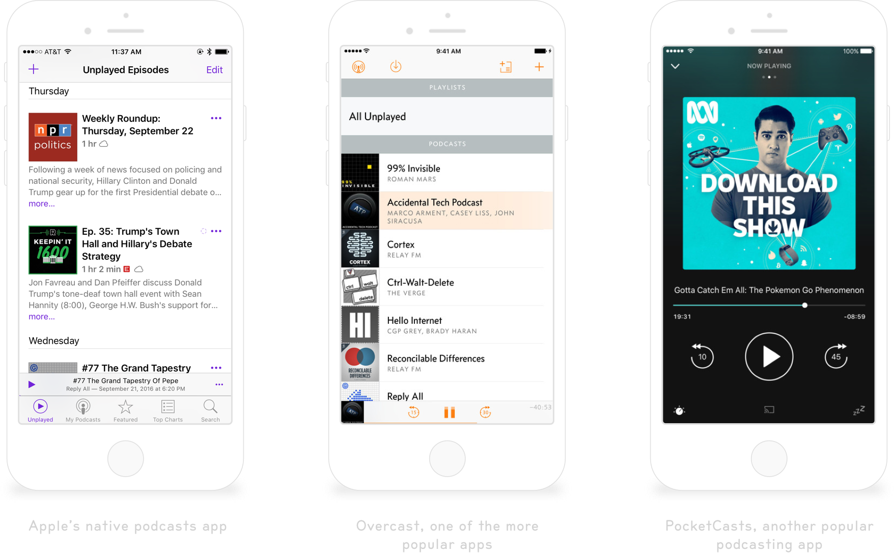
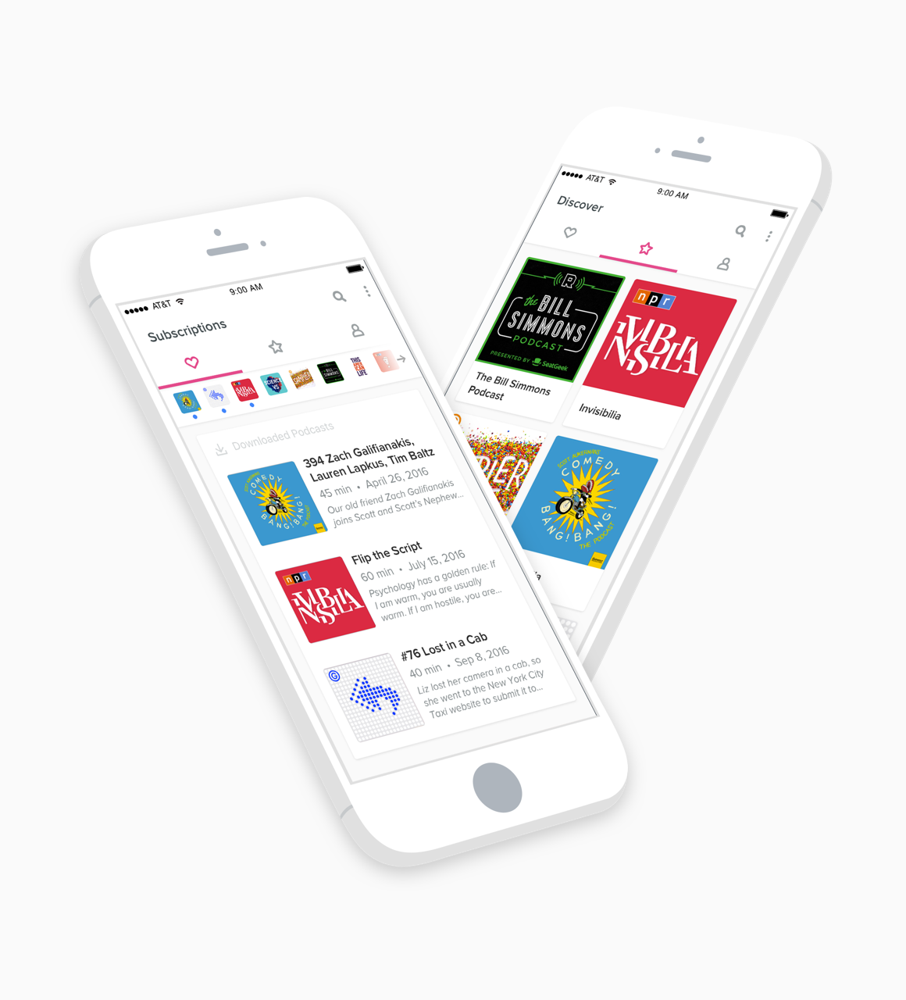

Identifying the Challenge
I listen to a lot of podcasts in my spare time, and I'm always searching for the best podcasting experience. There are currently a few popular apps (including Apple's native Podcasts app), but in my opinion, none of them have quite nailed the experience.
"As of right now, nobody has quite gotten the podcasting expereince right yet.”
One of the big issues with the current podcast platforms is the way that the subscribed podcasts are surfaced within the app. The process of subscribing to a new podcast should be more streamlined and delightful to the user. There's an opportunity to make the podcast-listening experience fun, and I think companies are currently missing that.

Designing a Solution
To me, the most important thing to redesign was the navigation. The current solutions are more complicated than they need to be. One of my favorite navigation paradigms right now is the YouTube iOS app, wherein the user can swipe left and right between screens. I tried to emulate this layout, and decided to separate the iOS app into three screens:
1. Subscribed Podcasts
2. Discover New Podcasts
3. My Profile

As is the case with YouTube's iOS app, this podcasting platform displays the subscribed podcasts in a bar at the top of the screen. This offers a quick way to acceess specific podcasts, which is much more streamlined than a dedicated page, like in Apple's Podcasts app.
This project is a work-in-progress; I have a lot more to design on this platform, including a "Now Playing" page for iOS, and a web version of the app.